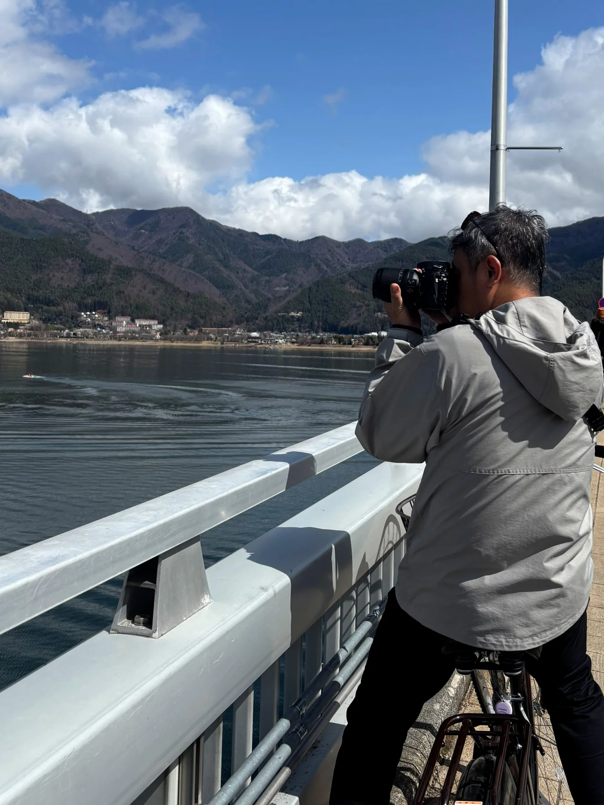

Ivan Setiawan
Fine Art Landscape & Nature Photographer

Photography is a way of seeing.
I am Ivan, the photographer behind nar4frame. Through photography, I explore landscapes, nature, and places that inspire me to pause and observe.
My approach is guided by light, composition, atmosphere, and a personal perspective. I aim to create photographs that go beyond documenting a scene and invite viewers to experience something more.
Photography Without Limits
Every frame offers a different way to see the world. For nar4frame, photography is not limited by places, subjects, or perspectives.
From open landscapes to the smallest details in nature and meaningful travel experiences, each photograph is an exploration of light, mood, and visual expression.
Beyond Every Frame.